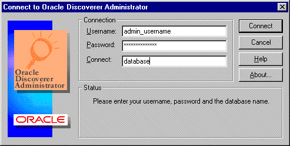
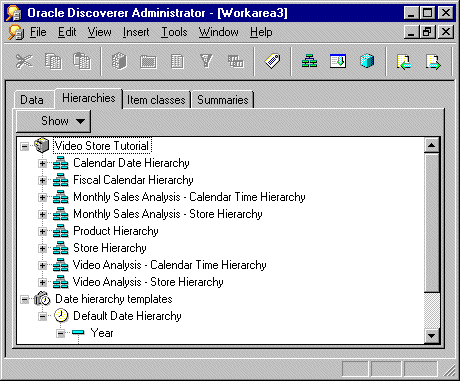
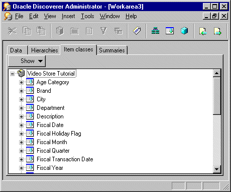
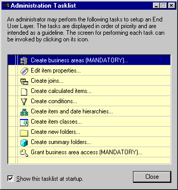

2
Getting started with Discoverer Administrator
Getting started with Discoverer Administrator
This chapter explains how to start using Discoverer Administrator, and includes the following topics:
What are the prerequisites for using Oracle Discoverer?
What are the system prerequisites?
Before you can use Discoverer Administrator:
- A suitable database must be installed and available. An Oracle 8.1.7 (or later) Enterprise Edition database will support the use of materialized views to improve the performance of summary folders.
- Discoverer Administrator must have been installed on a PC, typically as part of a full Oracle Developer Suite installation.
Before end users can use Discoverer, either one or both of the following must have been installed:
- Discoverer Plus and Discoverer Viewer must have been installed on an application server machine and configured correctly as part of an OracleAS installation (for more information, see the Oracle Application Server Discoverer Configuration Guide)
- Discoverer Desktop must have been installed on users' PCs.
What are the data access prerequisites?
To create and maintain a Discoverer system using Discoverer Administrator, you will require certain Discoverer privileges and database privileges:
- to create an EUL you must have the privileges described in:
- to manage an EUL you must have:
- the Discoverer Administration privilege on the EUL
- the Allow Administration privilege on business areas you want to modify
- the SELECT database privilege on any tables you want to add to a business area
- to install the tutorial, see the Oracle Discoverer Administrator Tutorial
- to take advantage of the following Discoverer features, you need specific privileges:
To use a Discoverer system, end users will require certain Discoverer and database privileges:
- access to at least one EUL
- access to at least one business area in the EUL
- the SELECT database privilege (granted either directly to database users or via a database role) on the tables on which folders in a business area are based
- to take advantage of the following Discoverer features, users need specific privileges
How to start Discoverer Administrator
To start Discoverer Administrator:
- From the Windows Start menu, choose Programs | Oracle Developer Suite - <HOME_NAME> | Discoverer Administrator to display the Connect to Oracle Discoverer Administrator dialog.
Figure 2-1 Connect to Oracle Discoverer Administrator dialog

Text description of the illustration connect.gif
- Enter the username of the database user with which you want to start Discoverer Administrator in the Username field
- Enter the password of the database user with which you want to start Discoverer in the Password field.
- Specify the database to connect to in the Connect field, using the following guidelines:
- if you are logging onto your default Oracle database, do not enter anything in the Connect field
- if you are logging onto a different Oracle database, specify the name of the database (if you not sure which name to use, contact your database administrator)
- Click the Connect button to start Discoverer Administrator and connect to the database.
What you see next depends on your Discoverer system:
Notes
- The Connect to Oracle Discoverer Administrator dialog might contain the Oracle Applications User check box. Select this check box if you want to use Discoverer Administrator to manage an EUL for use with Oracle Applications. For more information about using Discoverer with Oracle Applications, see Chapter 16, "Using Discoverer with Oracle Applications".
- You always start Discoverer Administrator in your default EUL. Your default EUL is the one specified on the "Options dialog: Default EUL tab". If you want to change the EUL you are working in, you must change your default EUL and then reconnect to Discoverer Administrator.
- When you use Discoverer Administrator, you should make sure that no more than one current connection exists against a particular EUL. When you have a single connection against an EUL, you avoid the risk of unknowingly making conflicting changes to EUL objects.
What is the Workarea?
The Workarea is your view into the End User Layer. The Workarea is where you maintain the EUL by creating and editing:
- business areas and folders
- items
- hierarchies
- item classes
- summary folders
The Workarea window is displayed within the Discoverer Administrator main window. You can open more than one Workarea window at a time, which is useful when you want to copy objects between business areas. Note however that all Workarea windows contain the same business areas.
About the tabs in the Workarea window
The Workarea window contains four tabs:
- The Data tab displays the structure and content of each business area. The Data tab enables you to:
For more information about the Data tab and the icons displayed on it, see "Workarea: Data tab"
- The Hierarchies tab displays the hierarchies within each business area. The Hierarchies tab enables you to:
- create new hierarchies
- review the content and organization of existing hierarchies
- view the hierarchy templates supplied with Discoverer Administrator
The Show button on the Hierarchies tab enables you to specify the hierarchies that are displayed.
Figure 2-3 Workarea window: Hierarchies tab

Text description of the illustration wkhitb.gif
For more information about the Hierarchies tab and the icons displayed on it, see "Workarea: Hierarchies tab".
- The Item Classes tab displays the item classes within each business area. The Item Classes tab enables you to:
- create new item classes
- view the list of values associated with an item class (if there is one)
- view items that use each item class
- identify the item classes that have drill to detail and alternative sort attributes, and whether those options are active
The Show button on the Item Classes tab enables you to specify the item classes that are displayed.
Figure 2-4 Workarea window: Item Classes tab

Text description of the illustration wkictb.gif
For more information about the Item Classes tab and the icons displayed on it, see "Workarea: Item Classes tab".
- The Summaries tab displays the summary folders within each business area. The Summaries tab enables you to:
For more information about the Summaries tab and the icons displayed on it, see "Workarea: Summaries tab".
About the context sensitive menus in the Workarea window
If you click the right-mouse button when working with Discoverer Administrator, a popup menu is displayed. In the Workarea window, the contents of this popup menu are the commands most frequently used with the currently selected object.
If no object is currently selected, the popup menu displays commands for working with a business area in general and commands appropriate to the current tab.
About the Administration Tasklist
When you first start Discoverer Administrator, the Administration Tasklist is displayed on top of the main Discoverer Administrator window.
Figure 2-6 Administration Tasklist

Text description of the illustration tasklst.gif
Use the Administration Tasklist in two ways:
- as a reminder of the basic steps involved in preparing a business area
- as a shortcut method of displaying the dialogs associated with the listed tasks
About Discoverer Administrator documentation and online help
Discoverer Administrator is supplied with online Help and documentation.
The Discoverer Administrator Help System gives you context sensitive access to reference information from the Administration Guide in HTML format.
To start the Help System either click Help in a Discoverer dialog or choose Help | Help Topics.
- the Help button on Discoverer Administrator dialogs displays detailed context sensitive help on the fields in the dialog
- the Help | Help topics menu option displays the contents of the Oracle Discoverer Administrator help system, including the context sensitive dialog help
- the Help | Manuals menu option displays a list of available Discoverer manuals (including the Oracle Discoverer Administrator error messages file)
To find a topic in the Help System:
- click the Contents icon at the top of each help page or choose Help | Help Topics (to see a list of the topics in the help system)
- click the Index icon at the top of every help page to see a list of index entries
To view (and print) the Administration Guide in PDF format, use the Oracle Developer Suite documentation CD.
Hint: To search for words or phrases, use the Administration Guide in PDF format.
Additional Discoverer documentation is available on the Oracle Application Server Documentation CD.